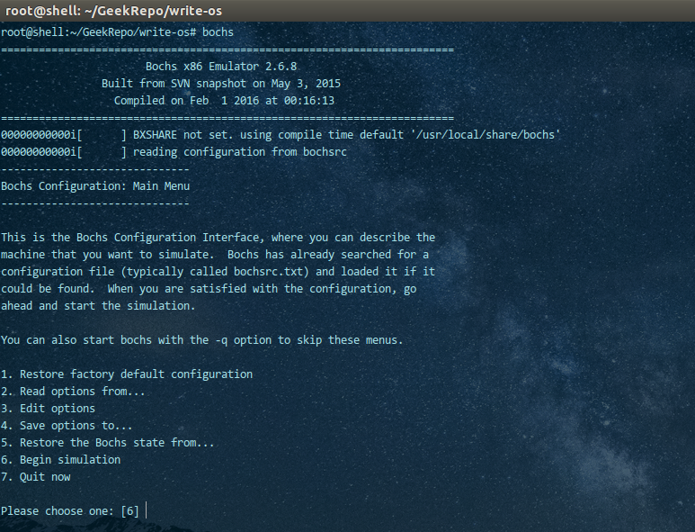
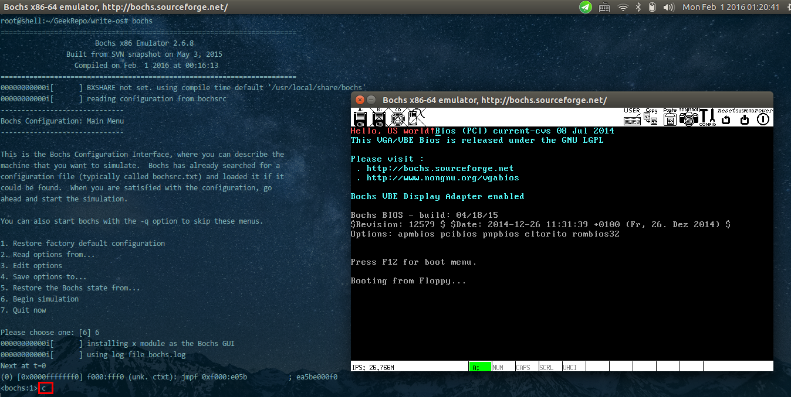
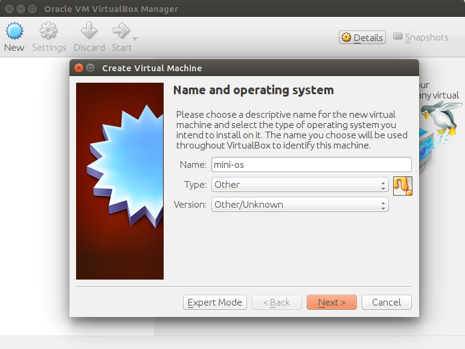
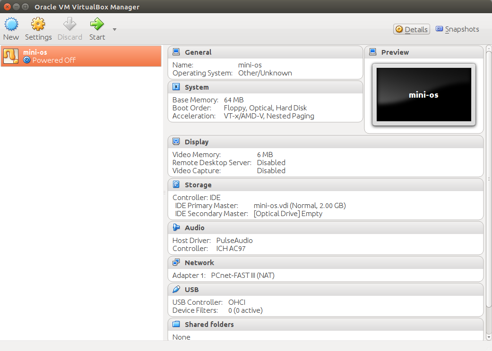
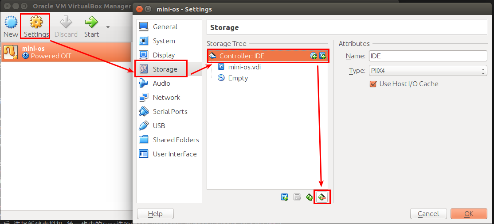
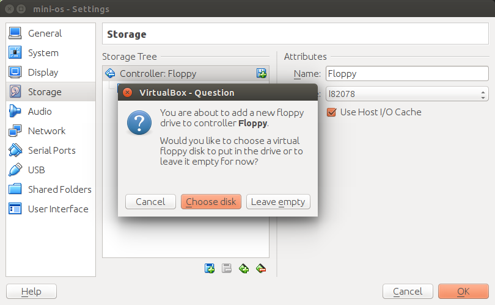
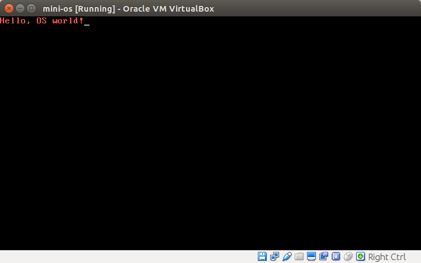

操作环境:Ubuntu 14.04 x64
1.编译安装Bochs和Nasm
0x01.编译安装Bochs
首先下载安装Bochs:
首页地址:http://bochs.sourceforge.net/,下载地址:http://sourceforge.net/projects/bochs/files/bochs/2.6.8/
写此文章时最新版本位2.6.8,我们选择从源码编译(以启用调试功能).
安装依赖项:
apt-get install build-essential g++
apt-get install libx11-dev libxrandr-dev libgtk2.0-dev
apt-get install xorg-dev bison vgabios bximage
我下载的源码为:bochs-2.6.8.tar.gz,解压并进入源码目录:
tar -zxvf bochs-2.6.8.tar.gz
cd bochs-2.6.8
配置编译选项:可以使用 ./configure --help来查看帮助.我的配置选项如下:
./configure \
--enable-debugger \
--enable-disasm \
--enable-x86-64 \
--enable-smp \
--with-all-libs \
--enable-x86-debugger \
--enable-ltdl-install \
--enable-idle-hack \
--enable-debugger-gui \
--enable-all-optimizations \
--enable-pcidev \
--enable-repeat-speedups \
--enable-fast-function-calls \
--enable-handlers-chaining \
--enable-trace-linking \
--enable-iodebug \
--enable-usb \
--enable-usb-ohci \
--enable-usb-xhci
最后进行编译并安装(注意不要作死启用--enable-plugins,否则死活启动不起来):
make && make install
默认安装的位置位于/usr/local/share/bochs/,样例配置文件(bochsrc-sample.txt)位于/usr/local/share/doc/bochs/
安装完成后,设置环境变量,打开/etc/profile,再最后面加入bochs的路径(默认编译安装的路径即为/usr/local/share/bochs):
export BXSHARE=/usr/local/share/bochs
然后在命令行中使用[. /etc/profile]启用即可.
我们将以bochsrc-sample.txt为模板参照来制作bochsrc配置文件.我的配置文件如下:
#内存分配为128MB
megs: 128
#ROM镜像文件名称,需要设置环境变量BXSHARE
romimage: file=$BXSHARE/BIOS-bochs-latest
vgaromimage: file=$BXSHARE/VGABIOS-lgpl-latest
# 磁盘镜像
floppya: 1_44=os.img,status=inserted
# 引导介质
boot: floppy
#日志信息,将会再工作目录下生成bochslog.txt文件
log: bochs.log
#启用鼠标
mouse: enabled=1
#键盘设置
keyboard: type=mf, serial_delay=250
其中磁盘镜像是os.img,我们稍后将会进行编译.其他的都不需要做修改.将上述配置文件保存为bochsrc文件到工作目录即可.
0x02.编译安装nasm
官方网站:http://www.nasm.us/,下载地址:http://www.nasm.us/pub/nasm/releasebuilds/
选择最新版本(写此文章时最新稳定版本为2.11.08),直接下载:wget http://www.nasm.us/pub/nasm/releasebuilds/2.11.08/nasm-2.11.08.tar.gz,执行如下命令进行编译安装:
tar -zxvf nasm-2.11.08.tar.gz
cd nasm-2.11.08
./configure
make
make install
2.编译并运行OS
os源码如下:
org 07c00h
mov ax,cs
mov ds,ax
mov es,ax
call DispStr
jmp $
DispStr:
mov ax,BootMessage
mov bp,ax
mov cx,16
mov ax,01301h
mov bx,000ch
mov dl,0
int 10h
ret
BootMessage: db "Hello, OS world!"
times 510-($-$$) db 0
dw 0xaa55
然后我们来编译系统并刻录系统:
#编译源码
nasm os.asm -o os.bin
#制作1.44M的空白软盘
dd if=/dev/zero of=os.img bs=512 count=2880
#将系统刻录到软盘上
dd if=os.bin of=os.img bs=512 count=1 conv=notrunc
接下来再工作目录输入命令:bochs即可启动,如下图所示:

我们选择6,将会启动模拟,如下图:

显示是一个黑框,这是因为我们编译的Bochs具有调试功能,在系统启动时给断了下来,只需要在控制台输入c,然后按下回车即可正常运行,运行界面如下:

哈哈,我们的第一个迷你OS便是编译并成功运行了,除了使用Bochs,我们当然也可以使其运行在其他虚拟机下面,我已VirtualBox为例(其安装从略):
打开VBox后,选择新建虚拟机,第一步中的Type选项Other,Version选择Other/Unknown.如下图:

然后依次Next..Next...你懂得.....最后我们来到如下界面:

如下图所示删除默认的IDE控制器(绿色减号图标):

然后新添加Floppy(绿色加号)并选择添加我们的os.img,如下图:

最后回到VBox主界面点击Start,稍等片刻就可以启动了,如下图:
